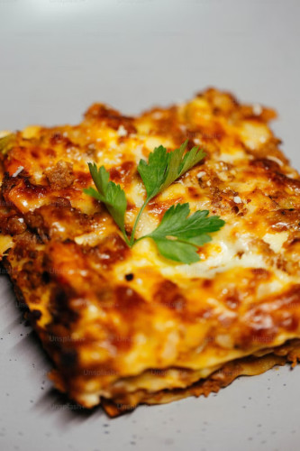

Lasagna

Ingredients
- 12 lasagna noodles (uncooked)
- 4 cups mozzarella cheese (shredded)
- 1/2 cup parmesan cheese (shredded)
Tomato Sauce Ingredients
- 1/2 pound ground beef
- 1/2 pound italian sausage
- 1 diced onion
- 2 cloves garlic minced
- 36 oz pasta sauce
- 2 tablespoons tomato paste
- 1 teaspoon italian seasoning
Cheese Mixture Ingredients
- 2 cups ricotta cheese
- 1/4 cup parsley chopped
- 1 egg (beaten)
Instructions
- Preheat the oven to 350 degrees. In a large pot of salted water, boil lasagna noodles. Drain, rinse under cold water, and set aside.
- In a large skillet, brown beef, sausage, onion, and garlic over medium-high heat until no pink remains. Drain any fat.
- Stir in the pasta sauce, tomato paste, Italian seasoning, half a teaspoon of salt, and 1/4
teaspoon of black pepper. Simmer uncovered over medium heat for 5 minutes or until thickened.
- In a separate bowl, combine 1 1/2 cups mozzarella, 1/4 cup parmesan cheese, ricotta, parsley, egg, and 1/4 teaspoon salt.
- Spread 1 cup of the meat sauce in a 9x13 pan. Top it with 3 lasagna noodles. Layer with 1/3 of the ricotta cheese mixture and 1 cup of meat sauce. Repeat two more times.
Finish with 3 noodles topped with remaining sauce.
- Cover with foil and bake for 45 minutes.
- Remove the foil and sprinkle with the remaining 2 1/2 cups mozzarella cheese and 1/4 cup parmesan cheese. Bake for an additional 15 minutes or until browned and bubbly.
- Let it sit for 15 minutes.